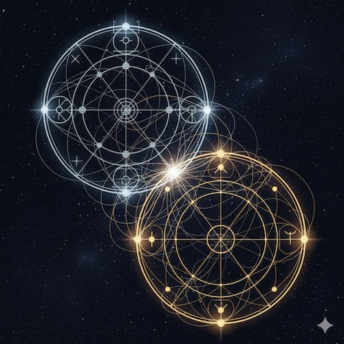

7. Analysis of Compatibility and Interaction: Synastry in [MSA]
Table of Contents:
7.1 The [MSA] Protocol of Analysis: Three Filters
7.2 Filter 1: Weighing the Players (Structural Weight)
7.3 Filter 2: The Search for Innate Resonance
7.4 Filter 3: The Mechanics of Interaction (The Principle of Asymmetry)
7.5 The Hierarchy of Cross-Aspects (Quality of Interaction)
7.6 The Final Synthesis: Ideal Compatibility

Introduction: From the Individual to Interaction
In Chapter 6, we learned to analyze an individual natal chart using a hierarchical model, identifying a person's key patterns of interaction with [The Field]. Now, a natural question arises: how do we analyze the interaction between two people?
Traditional synastry focuses almost exclusively on calculating cross-aspects between planets. It assumes that if Person A's planet touches Person B's planet, a relationship exists. [MSA] proposes a radically different approach based on a fundamental principle: before analyzing HOW two people interact (dynamics), we must understand WHO is interacting (structural weight) and if there is any SIMILARITY between them (resonance).
This chapter outlines the [MSA] protocol for synastry—a system that moves beyond "good/bad aspects" to measure the depth, asymmetry, and evolutionary purpose of a connection.
7.1 The [MSA] Protocol of Analysis: Three Filters
Traditional synastry often jumps straight to listing aspect lines. [MSA] considers this premature. A connection between two background planets is meaningless compared to a connection involving the core of the personality.
Therefore, the analysis follows a strict Three-Filter Protocol:
Filter 1: Weighing the Players. Before comparing charts, we analyze the individual importance of planets for each person.
Filter 2: Innate Resonance. We determine if the two structures are compatible at the foundational level ("Do we speak the same language?").
Filter 3: Active Interaction. Only then do we analyze the cross-aspects to see how the energy flows, interpreting them strictly through the lens of Asymmetry.
7.2 Filter 1: Weighing the Players (Structural Weight)
Before looking at the synastry, we must establish the "weight category" of every planet in each partner's chart. We apply the Hierarchical Model from Chapter 6:
Level 0: The Core
Planets: Sun and Moon.
Meaning: The very existence and perception of the person. Any touch here is critical.
Level 1: The Pillars
Planets: Planets on Angles (Asc, MC, Dsc, IC) or in cardinal aspects to Luminaries.
Meaning: The dominant life themes and character traits.
Level 2: The Engines (Active Scenarios)
Planets: Planets involved in natal cardinal aspects (but not to Level 0/1).
Meaning: Active internal conflicts or generators of energy. "Hot buttons."
Level 3: The Background (Latent Potential)
Planets: Unaspected planets.
Meaning: Dormant qualities. They do not generate events on their own.
Why this is crucial: A synastry aspect to a Level 1 planet will always outweigh an aspect to a Level 3 planet. This defines who is "driving" the relationship.
7.3 Filter 2: The Search for Innate Resonance
Resonance is similarity. We are not looking for random coincidences, but for similarity at the level of the most significant, structure-forming elements of the natal charts.
[MSA] identifies three types of innate resonance:
7.3.1 Type 1: Resonance by Core Personality (Similar Life Themes)
This is the most powerful type of resonance. It occurs when both partners have the same planetary principles as dominant forces in their personality structure (placing them at Level 1).
Mechanism: In both individuals, the "Core" (Sun/Moon/Angles) is in a strong cardinal aspect with the same planetary principle.
Example: Person A has Saturn square Sun. Person B has Saturn conjunct Moon.
Meaning: Both people are working on a similar fundamental task (e.g., the integration of structure/Saturn). They intuitively "recognize" the other's main life drama. This creates the deepest basis for mutual understanding.
7.3.2 Type 2: Resonance by Internal Scenarios (Similar Dynamics)
This occurs when both partners have the same pair of planets linked by a cardinal aspect in their natal charts (Level 2).
Mechanism: Both partners have the same pair of planets forming a cardinal aspect (0°, 90°, 180°).
Example: Person A has Venus square Mars. Person B has Venus opposite Mars.
Meaning: Both are innately "tuned" to the same internal dynamic (e.g., the tension between desire and action). They understand each other's internal motives and struggles without words.
7.3.3 Type 3: Resonance by Phasal Similarity
This occurs when both partners have the same angular distance between the same pair of planets (Aspect of Similarity), even if it is not a cardinal aspect.
Mechanism: Both individuals are in the same phase of the synodic cycle for a given pair.
Example: Both have a Sun-Mercury distance of ~20°.
Meaning: This creates a structural similarity in the "background climate" of the personality. It generates a sense of comfort, familiarity, and ease in daily interaction.
7.4 Filter 3: The Mechanics of Interaction (The Principle of Asymmetry)
Once innate resonance is established, we proceed to analyze the active channels of interaction—the cross-chart cardinal aspects (0°, 90°, 180°).
However, traditional astrology makes a fatal mistake here: it assumes that an aspect is a "50/50 contract." It assumes that if Person A's Venus touches Person B's Mars, both experience the connection with equal intensity.
[MSA] postulates the Principle of Asymmetry:
The impact of a cross-aspect is never equal. It depends entirely on the Structural Weight (Filter 1) of the planet involved in each individual's natal chart.
7.4.1 Weighing the Impact
To understand who feels what, we apply the weights from Filter 1:
High Impact (Target Hit):
If a partner's planet forms a cardinal aspect to your Level 0 (Sun/Moon) or Level 1 (Angles/Key Modulators) planet.
Effect: The interaction touches your core identity. You cannot ignore it. It feels fateful, overwhelming, and structurally significant. You are the one "hooked."
Medium Impact (Scenario Activation):
If a partner's planet forms a cardinal aspect to your Level 2 planet (part of a natal cardinal aspect).
Effect: The interaction activates a specific, already active life script ("The Engine"). You react strongly because this theme is already "hot" or problematic for you.
Low Impact (Background Noise):
If a partner's planet forms a cardinal aspect to your Level 3 planet (background/unaspected).
Effect: You feel the energy, but it does not shake your foundation. It is "just an interaction," not a defining moment.
7.4.2 Types of Synastric Dynamics
Based on the weights, we can define three types of interaction scenarios:
1. Symmetrical Resonance (The Power Couple)
Condition: The aspect connects Level 0 or 1 planets in both charts.
Result: Mutual Intensity. Both partners feel the fateful nature of the bond. The relationship becomes a central axis of life for both.
2. Asymmetrical Resonance (The Fan and the Idol)
Condition: The aspect connects a Level 0/1 planet for Person A, but a Level 3 planet for Person B.
Result: One-sided Significance. Person A feels expanded and seen. Person B simply expresses their nature. Person A may project meaning that Person B does not subjectively experience.
3. Background Interaction (The Colleagues)
Condition: The aspect connects Level 3 planets for both.
Result: Common interests, easy interaction, but no "glue" to hold them together in a storm.
7.5 The Hierarchy of Cross-Aspects (Quality of Interaction)
Only after weighing the planets do we look at which planetary principles are interacting. This adds "color" and "quality" to the structural weight.
1. Core Resonance (Existential Bond)
Participants: Interaction between Luminaries (Sun, Moon) and Angles (Asc, MC).
Meaning: The highest level of connection. Recognition of existence. The foundation of marriage and family.
2. Mirror Resonance (Rhythm Synchronization)
Participants: Aspects between same-named planets (e.g., Mars-Mars).
Meaning: Synchronization of functional cycles (values, activity). Ease of coordination.
3. Functional Resonance (Dynamic Exchange)
Participants: Aspects between different personal planets (e.g., Venus-Mars).
Meaning: The "Salt and Pepper." Attraction, dialogue, and emotional exchange.
4. Transformational Resonance (Deep Growth)
Participants: Interaction between a Personal Planet and a Slow Planet.
Meaning: The Teacher and the Student. Fateful lessons and evolutionary growth.
7.6 The Final Synthesis: Ideal Compatibility
Ideal compatibility in [MSA] is not an abundance of "harmonious" aspects (trines/sextiles), which only create comfort but not energy.
The Ideal Formula requires:
-
Deep Innate Resonance: Similarity at Level 1 or 2 (Do we understand each other's core?).
-
Symmetrical High-Impact Connections: Cross-aspects that touch Level 0 or 1 planets for both partners (Are we both equally invested?).
-
A Mix of Dynamics: A foundation of Core Resonance (Sun/Moon) for stability, spiced with Functional Resonance (Venus/Mars) for energy, and deepened by Transformational Resonance (Saturn/Pluto) for growth.
Such relationships are characterized by deep mutual understanding, constant dynamic development, and a shared evolutionary path.
Summary of Chapter 7
We have completed the construction of the model for compatibility analysis in [MSA]. The key conclusions are:
1. The Three-Filter Protocol:
We follow a strict order:
- Filter 1 (Weighing): Identify importance (Level 0-3).
- Filter 2 (Resonance): Check for similarity.
- Filter 3 (Interaction): Analyze cross-aspects through asymmetry.
2. The Principle of Asymmetry:
Relationships are rarely 50/50. The impact depends on the structural weight. A Square to a Level 1 planet is fateful; a Trine to a Level 3 planet is negligible.
3. Types of Resonance:
Core Personality, Internal Scenarios, Phasal Similarity.
4. The Hierarchy of Cross-Aspects:
Core (Existential), Mirror (Sync), Functional (Dynamic), Transformational (Growth).
End of Chapter 7